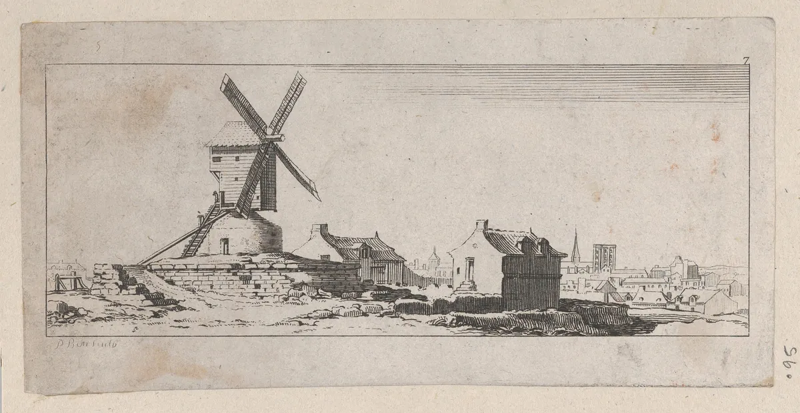
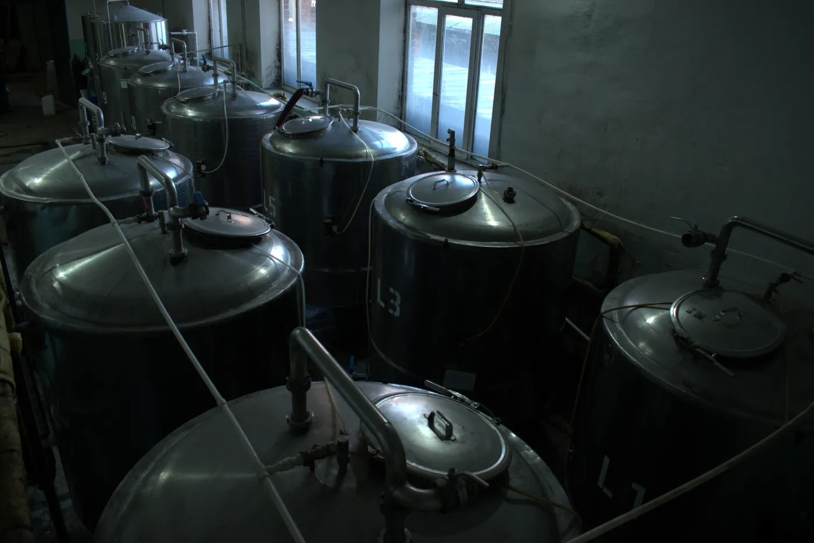
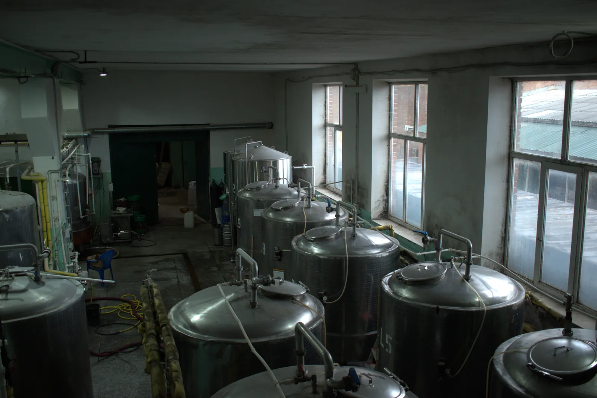
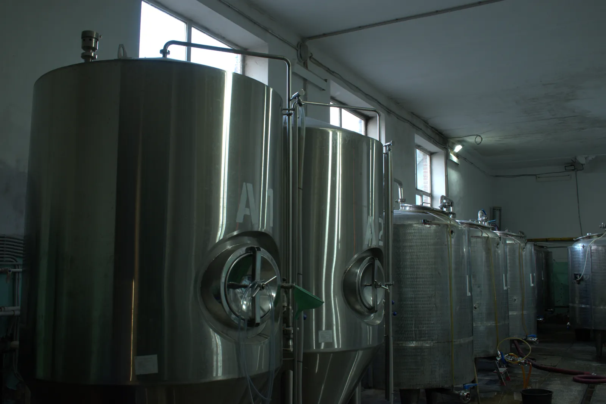

Хартия пивоварни
Название обязывает. Вот четыре правила, по которым мы варим.

Состав
В пиво идут вода, солод, хмель и дрожжи. Вкусовых добавок в нём нет.
Ручная работа
Основные операции на варке выполняет пивовар. Автоматики у нас минимум.
Живое пиво
Мы не фильтруем пиво, поэтому оно может быть слегка мутным. Так задумано.
Свежесть
Варим небольшими партиями и стараемся, чтобы пиво быстро доходило до вас.
От зерна до кружки
Мельница на нашем знаке напоминает о зерне. Из зерна в деревнях делали и хлеб, и пиво. Состав простой, а ждать приходится долго.
Мы не торопим процесс и показываем его без прикрас.
Пивоварня основана в 2015 году. Мы хотим, чтобы тюменцы пили по-настоящему свежее пиво: между ёмкостью на пивоварне и вашей кружкой проходит как можно меньше времени.



Как варится наше пиво
Солод и вода
Берём солод, измельчаем и смешиваем с горячей водой.
Варка
Полученное сусло варим с хмелем.
Брожение
Охлаждаем сусло, добавляем дрожжи и даём пиву побродить и отстояться.
Розлив
Готовое пиво разливаем.